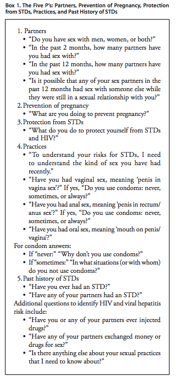

The prevention and control of STDs are based on the following five major strategies:
• education and counseling of persons at risk on ways to avoid STDs through changes in sexual behaviors and use of recommended prevention services;
• identification of asymptomatically infected persons and of symptomatic persons unlikely to seek diagnostic and treatment services;
• effective diagnosis, treatment,and counseling of infected persons;
• evaluation, treatment, and counseling of sex partners of persons who are infected with an STD; and
• pre-exposure vaccination of persons at risk for vaccine-preventable STDs.
Primary prevention of STDs begins with changing the sexual behaviors that place persons at risk for infection. Health-care providers have a unique opportunity to provide education and counseling to their patients (5,6). As part of the clinical inter- view, health-care providers should routinely and regularly obtain sexual histories from their patients and address management of risk reduction as indicated in this report. Guidance in obtain- ing a sexual history is available in Contraceptive Technology, 19th edition (7) and in the curriculum provided by CDC’s STD/ HIV Prevention Training Centers ( http://www.stdhivpreventiontraining.org ). Effective interviewing and counseling skills, characterized by respect, compassion, and a nonjudgmental attitude toward all patients, are essential to obtaining a thorough sexual history and to delivering prevention messages effectively. Key techniques that can be effective in facilitating rapport with patients include the use of 1) open-ended questions (e.g., “Tell me about any new sex partners you’ve had since your last visit,” and “What’s your experience with using condoms been like?”); 2) understandable language (“Have you ever had a sore or scab on your penis?”); and 3) normalizing language (“Some of my patients have difficulty using a condom with every sex act. How is it for you?”). The “Five P’s” approach to obtaining a sexual history is an example of an effective strategy for eliciting infor- mation concerning five key areas of interest (Box 1).
Efforts should be made to ensure that all patients are treated regardless of individual circumstances (e.g., ability to pay, citizenship or immigration status, language spoken, or specific sex practices). Patients seeking treatment or screening for a particular STD should be evaluated for all common STDs. All patients should be informed about all the STDs for which they are being tested and notified about tests for common STDs (e.g., genital herpes) that are available but not being performed.
